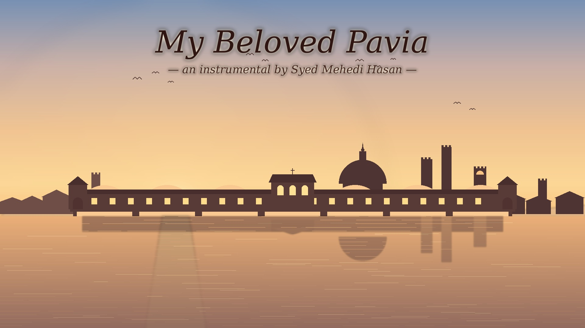
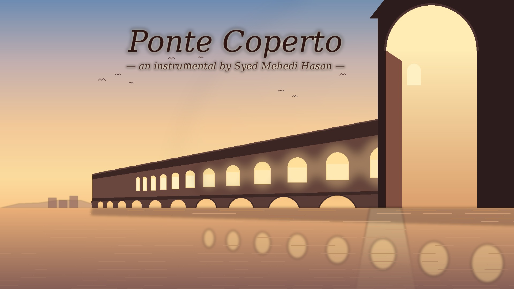
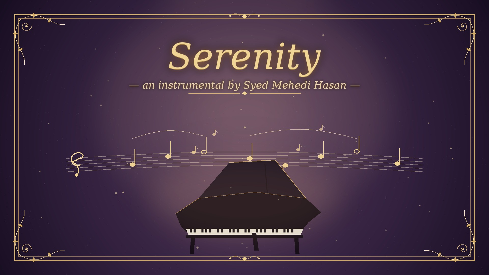
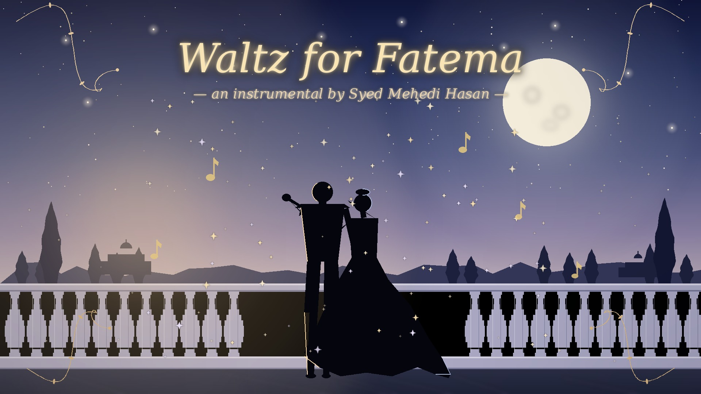
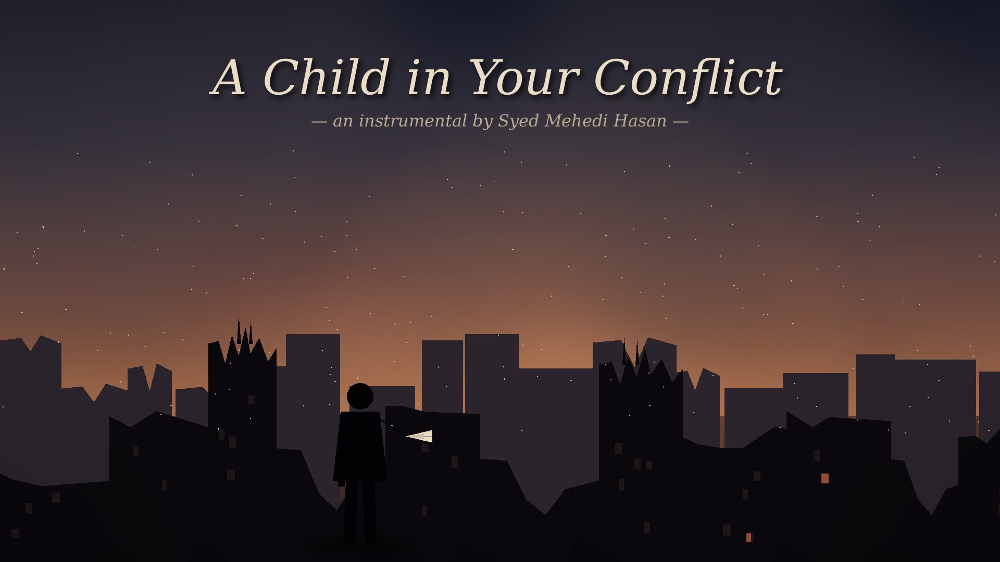

সব আলো নিভে গেলে
Shob Alo Nibhe Gele
Sung by Shanila Islam and me, with backing vocal by Samir Hafiz.
Watch on YouTube ↗Physics and music are the same habit in two keys — a few honest rules, and something that resonates. Songs from ASHWIN, and guitar instrumentals of my own.
ASHWIN is a songwriting project. I write the music and Nafees Fahmi Ali writes the words. Our first album, সমর্পণ (Shomorpon), is being produced and arranged by Samir Hafiz, who is with us for this record rather than as a permanent member of the project. The album is still in the making; these two songs are out.
Sung by Shanila Islam and me, with backing vocal by Samir Hafiz.
Watch on YouTube ↗Guitar pieces I wrote for myself, here in their orchestrated versions.

I lived three of my most important years in Pavia, Italy. COVID-19 had just started and we were at the epicentre; it changed our perspective on life forever. It was a time for contemplation, and Pavia took a permanent place in my heart. I composed this guitar instrumental in 2019 — here in its orchestrated version.

In Pavia I walked regularly across the famous covered bridge, the Ponte Coperto. I wrote this guitar composition in 2020 to capture how those walks felt — here in its orchestrated version.

An instrumental I composed in 2015 — here in its orchestrated version.

An instrumental I composed in 2015 — here in its orchestrated version.

A guitar instrumental I composed some years ago — here in its orchestrated version.